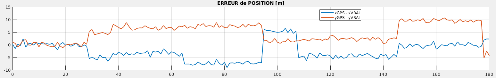
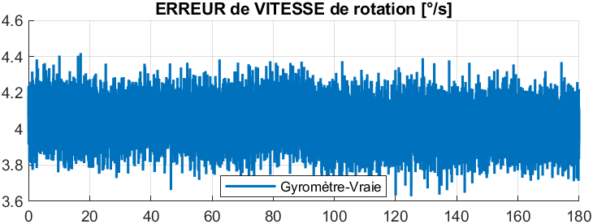
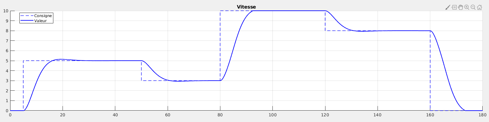
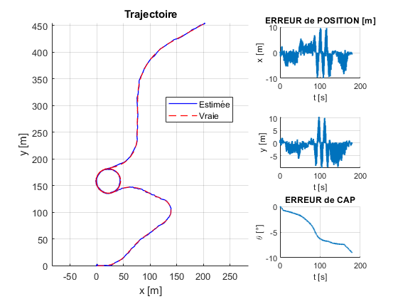
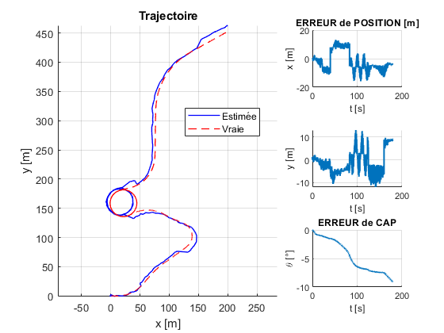
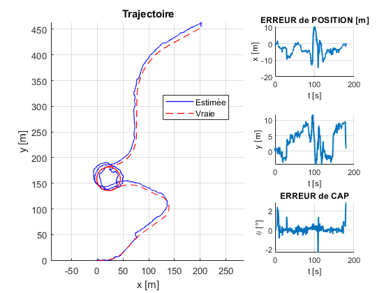

This work was about implementing a navigation algorithm based on extended Kalman filter (EKF) for a land vehicle. We had access to a range of non-perfect sensors : a low-drift IMU with Gaussian noise and biais, a GPS with Gaussian noise and occasional biais and odometers with Gaussian noise.
Find, analyse and test different models, starting from a simple one and complementing it to improve the estimation.
We derived Q and R from the measurement noise 's amplitude and from the error between output and input reference speed visible on the curves below.



When simulating a non-biased-sensors vehicle, the estimation was almost optimal since all noises were white and covariances were approximately known.

Adding biases and drifts, the estimation was less precise.

We successively added several states and measures to observe the effects on the estimations.
To take into account the gyrometric bias, we added a new state b such as :We added V as a new state so that both first equations are not uncertain annymore.
To make the estimation on V easier, we used the measures from the odometers : In a same way, to make the estimation on the bias easier, we used the measures from the odometers :We derived the noise covariance on b state from the maximum value of the low-frequency error on the orientation.
